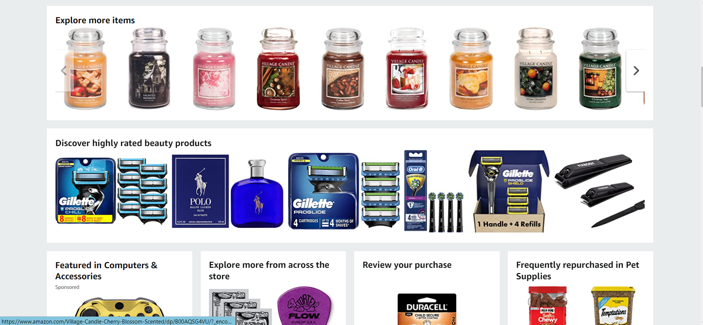

Rule of Thirds
Washington State Tourism
The banner image of this website uses the rule of thirds by lining up the cliff on the right side where the 2nd third would be and the developers also had text aligned with the first third.
PARC Proximity
Amazon
Amazon does a good job of using proximity to grab the user's attention. When everything is compact but also appealing to the eye, it gives the user the sensation of digital shopping or browsing.
Whitespace
SquareSpace
The home page of SquareSpace uses whitespace to make their home page more appealing and nice to look at. Which is a good method of making a good first impression on the user.